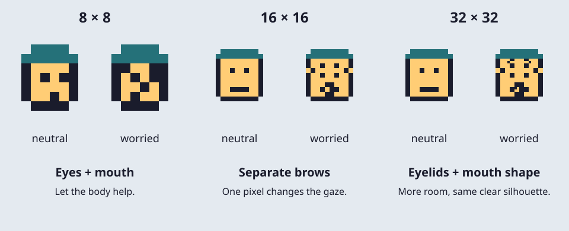
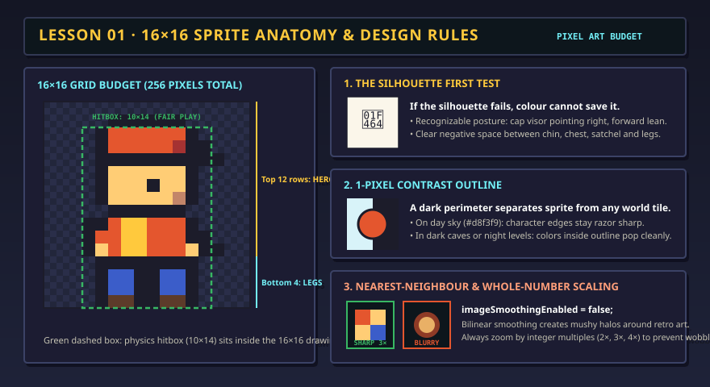

Neutral → worried
Raise the inner brows, make the mouth small and open, and pull the shoulders up. Let the character look toward the danger.
Draw a character. Give every action a readable pose.
Editing a colour changes that slot in every clip. Slot 0 erases.
Click or drag to draw. Keyboard: arrows move; Space or Enter uses the tool; Delete erases. Home / End moves to the row edges. Tab leaves the grid.
Shifting crops pixels at the edge. Undo restores them.
Preview stays on the spot to expose changes in your frames. Game movement, gravity, collisions and potion effects are programmed separately.
Fits the example head at rows 5–8. For your own head, place eyes and mouth by hand. Back views have no face.
Learn the one-pixel expression testSelect a pose to draw. A longer duration holds a pose. Add up to 24 frames per clip.
Describe the character, facing, action and important visual cues. These words travel with your project and timing data. Add credit here for art you import.
Use a single PNG exactly the project size. Colours map to your nearest palette colour; transparency is preserved. This replaces only the selected frame and can be undone.
Bring in your existing pathway drawing to keep working on it, or copy a studio pose back. Colours map to the destination palette. Copying back changes only the courier’s first idle pose; the pathway game keeps its other animations.
Starting studio…
Your project saves in this browser when storage is available. Download JSON for a backup or to use another device. Files stay on your device; this tool does not publish them.
Start with the editable examples above, or choose New project → Blank clips to draw your own. Choose an action and facing direction, then use Step frame to study each pose. A readable animation comes from shapes, timing and a clear change in intention.
Work in short rounds: draw a silhouette, give it an expression, animate one action, then ask a partner what they see without telling them the answer.
At 16 × 16 your face may occupy only 5 × 4 pixels. A one-pixel eyebrow move is a large change. Spend your pixels on the eyes and head angle before small costume details. At 8 × 8, the body pose may carry most of the emotion; at 32 × 32, you can separate eyelids, brows and mouth.

Raise the inner brows, make the mouth small and open, and pull the shoulders up. Let the character look toward the danger.
Relax the shoulders, open the chest and lift the mouth corners. A small exhale or upward sparkle can make recovery clear.
Narrow or close the eyes, tuck the chin and recoil. Keep this brief; hold the recovery longer so it feels intentional.
Lower the inner brows, plant the feet and lean toward the task. Do not rely on a red tint to mean anger.
The face stamp is a starting point for the example head. Your own character might have one eye, a beak, a mask or no face. Animate its antennae, ears, outline or posture instead. Use the grid and coordinate controls to place those features yourself.
A sprite’s facing direction is different from its movement direction. A character can back away while still facing an enemy. Keep camera, facing and action as separate design decisions.
| Choice | Side-scrolling | Top-down |
|---|---|---|
| Visible surfaces | Show the side of the head, torso and legs. Align feet to a common ground line. | Show the top of the head and shoulders, with a shorter body. The feet define the ground contact point. |
| Directions | Left and right. A horizontal flip is a useful start; fix badges, shields and which hand holds the sword. | Down/front, up/back, left and right. Draw the front and back separately. A back view needs hair, hood or backpack instead of eyes. |
| Walking | The legs pass and contact the ground; the torso has a small vertical bob. | Keep the foot anchor consistent in all directions. Use alternating foot overlap and shoulder motion when walking up or down. |
| Jumping | The game moves the sprite along an arc; the artwork changes between push, tuck and landing. | The game separates height from position on the floor. A shadow under the feet can show the landing point while the sprite rises. |
| Sword depth | Draw the arc out in front of the facing direction. | Draw the arc toward the target. An upward attack may pass behind the head; a downward attack appears in front of the body. |
Try the same walk in all four directions. Do not rotate a side view 90 degrees to make a back view: the character would lie sideways. Compare costume colours and body size so every direction still looks like the same hero.
First draw the important poses. Then choose how long each is visible. 100 ms is one tenth of a second. These timings are starting points to experiment with. A loop returns to its first pose; a one-shot plays once and holds its final pose in this studio.
| Action | Pose sequence | Readability test | Inspect your clip |
|---|---|---|---|
| Idle | Rest → small breath → rest → quick blink. Hold still for 400–600 ms; blink for about 100 ms. | Feet stay planted. A subtle breath should feel alive without wobbling the whole body. | |
| Walk | Left contact → passing → right contact → passing. Start around 140–180 ms per pose. | The front leg changes. The passing poses keep the legs from looking like scissors. | |
| Run | Push → airborne stride → opposite push → flight. Try 80–100 ms per pose. | Use a wider stride, more lean and a moment with both feet off the floor. Compare with walking. | |
| Jump | Crouch → push → apex tuck → falling reach → landing squash → recover. | The rising and falling poses should be distinguishable. Keep the apex readable, then make the landing quick. | |
| Fall | Look down → arms out → dangling legs. Loop only while the game is falling. | A fall looks less controlled than a jump. The game should return to a landing or hurt state on contact. | |
| Hurt | Recoil → wince → off balance → recovery. Try a 100 ms impact and a 260 ms recovery. | The reaction reads with no red overlay, camera shake or flashing. Distinguish hurt from defeat. | |
| Victory | Gather energy → arms up → celebrate → proud hold. Let the last pose rest for 600 ms. | A big open posture reads even when the face is tiny. Avoid making the entire pose depend on sparkles. |
Leave room in the frame for the weapon and its trail. This studio crops at the frame edge. For a larger weapon in a game, use a larger sprite frame or a separate weapon layer, and keep its attachment point consistent.
Use a held worried face, raised shoulders and spread arms before the character drops. A small upward pop before a downward fall gives viewers time to register the reaction. This is an original classroom example of an arcade-style defeat sequence; it is not copied game artwork.
Separate losing a life from game over. For example, Nintendo’s Super Mario Bros. instruction booklet distinguishes losing a life from reaching game over when lives run out. A worried falling pose can signal a failed attempt, but the game’s rules decide whether to respawn or end the session.
The preview holds the sprite in place so you can judge the artwork. The upward pop and off-screen drop belong to game movement code. When exporting, keep the defeat clip as a one-shot so it does not repeatedly fall and reappear.
The studio starts paused, supports manual stepping and uses no automatic flashing. Arrow keys move through the drawing grid; Tab leaves it. For precise editing without dragging, use Column, Row and Use tool at coordinates. The palette has numbered, named controls, and the timeline includes written pose descriptions.
Studio projects save separately from the shared Pixel Courier art. Copy this 16 × 16 pose to the pathway courier transfers just one idle pose, mapping colours to that game’s palette. The other lessons keep their existing game animations. Use the studio JSON or ZIP to carry your full animation set to another project.
For further practice, explore pixel artist Pedro Medeiros’s pixel art and game development tutorials, test your full character project in the DIY Sprite Asset Test Bench, then explore Sprite Sheets & Animation for the original pathway courier.
Where this comes from
Arcade boards and home consoles had very little memory, so graphics were built from tiny blocks. The NES drew its world from 8 × 8 pixel tiles and could show only a handful of colours per sprite. Artists learned to say “plumber” or “ghost” with a few dozen pixels — the same skill you practise today.
16 × 16 gives you 256 pixels. Every pixel must earn its place: eyes, cap, satchel, feet.
Fifteen colours plus transparent. Fewer colours make a cohesive look and force clear shapes.
If the shape alone is readable, the colours only make it better. If it isn’t, no colour will rescue it.
The courier is drawn in 16 × 16, but the game collides with a smaller 10 × 14 box. You will see why in lesson 06.

Nearest-neighbour filtering keeps each pixel a solid square. Whole-number zoom such as 2×, 3× or 4× gives every source pixel an equally sized block. At 2.5×, some blocks must be wider than others on a physical pixel grid. Avoid smooth filtering that blends the edges. The studio exports native-size PNGs so your game can choose its own integer zoom.
Same idea, other tools
Design a second character on paper: a rival courier or a guard dog. Make its silhouette instantly different from yours (taller, wider, a different hat). You will draw it in lesson 09.
Definition of done
0/4 checked
Evidence: Show three clips to a partner without their labels. Ask them to name the action, facing and feeling, then revise any unclear poses.
Download your studio project JSON. Copy a 16 × 16 pose to the pathway courier if you want to use it in the next lesson.